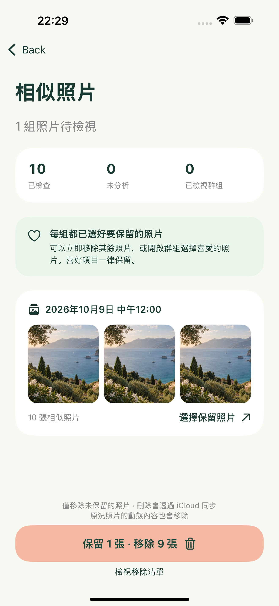
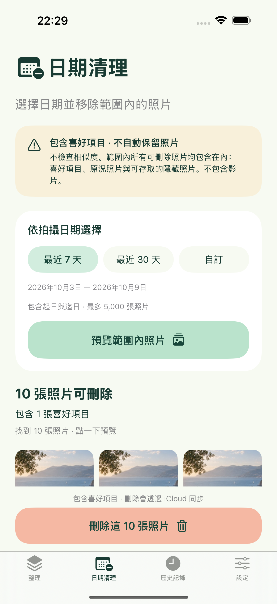
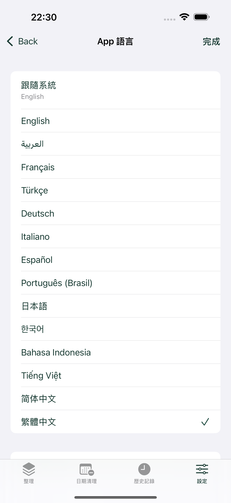

選擇日期範圍
整理最近 7 天、本月或自訂日期的照片。依照照片的建立日期，以及裝置的行事曆與時區計算，包含起日與迄日。若只授予有限存取權，僅會納入已授權的照片。
SNAPTRIM · PHOTO CLEANER
找出 iPhone 上的相似照片，選擇要保留的照片，再清除其餘照片。也可在確認後刪除指定日期範圍內的照片，包含喜好項目。
為回憶騰出一點空間。即將推出的 1.1 版本：iPhone · iOS 17+ · 1.1: 免費，含廣告，無需帳號、無 App 內購買。照片在本機處理。
整理最近 7 天、本月或自訂日期的照片。依照照片的建立日期，以及裝置的行事曆與時區計算，包含起日與迄日。若只授予有限存取權，僅會納入已授權的照片。
相似照片與系統連拍照片會在裝置上分組。每組起初都有建議保留的照片，你可以多保留幾張或改選其他照片。相似照片清理會保護喜好項目，且每組至少保留一張照片。建議並非美感評分。
清理單一群組或所有未選擇保留的照片，接著在 iOS 中確認。取消後不會變更照片。本機歷史記錄僅會顯示成功的刪除操作。
獨立的「日期清理」分頁可選擇最近 7 天、最近 30 天或自訂日期。預覽照片與數量後，需在 App 和 iOS 中確認。這會刪除範圍內所有可刪除的照片，包含喜好項目、原況照片，以及 App 可存取的隱藏照片。不會自動保留任何照片，也不會使用相似照片清理的忽略清單。不包含影片。系統無法刪除的照片會計入數量並予以保留。
日期清理絕不會將新照片加入已確認的選取範圍。變更日期、照片圖庫發生變更或離開 App，都會使預覽失效。刪除前請重新檢查。若已啟用「iCloud 照片」，刪除操作會同步到使用同一圖庫的其他裝置。
實際 App 畫面使用可丟棄的範例照片，並非使用者的私人圖庫。
選擇日期範圍

保留喜愛的照片

確定不再需要？按日期清理。

選擇適合你的語言
SnapTrim 預設跟隨裝置支援的語言，若無對應語言則使用英文。你可在「設定」中選擇 14 種語言之一，或切回「跟隨系統」。選擇會儲存在本機。App 文字會立即更新；iOS 權限與刪除對話框可能依照系統的 App 語言設定顯示。掃描、載入或刪除期間無法切換語言。
每次操作最多支援 5,000 張照片。相似度比對會比較在 10 分鐘內拍攝的影像；系統連拍則使用連拍識別碼。若圖庫中短時間拍攝的照片很多，可能需要縮小日期範圍。辨識僅為輔助，可能漏掉重複照片。原況照片以靜態影像進行辨識，刪除時會移除整個項目。雲端下載預設關閉，啟用後會使用 Apple 照片服務，可能消耗行動數據與暫存空間。進入背景時掃描會停止，重新開始時可利用快取結果。
開啟 Apple「照片」App 的「最近刪除」即可復原照片，通常可在 30 天內復原。SnapTrim 絕不會永久清空「最近刪除」，也不會保存照片備份。可用空間由 iOS 與 iCloud 管理，刪除後不保證可用儲存空間立即增加。
請透過電子郵件提供 iPhone 機型、iOS 版本、App 版本，以及發生問題前的操作步驟。請勿寄送私人照片。開發者：Peng Lin。
說明與支援